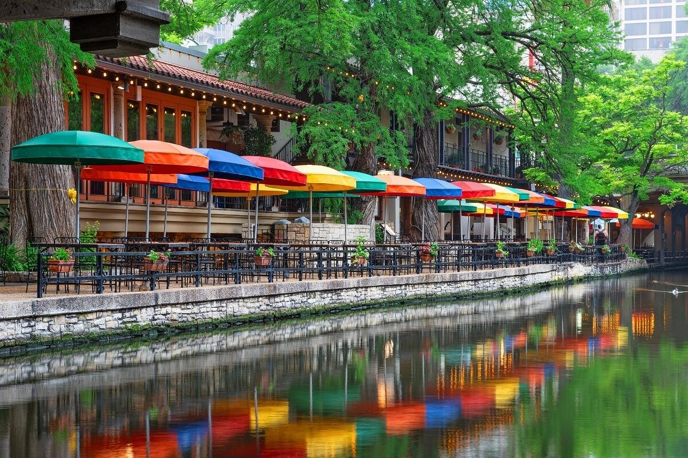
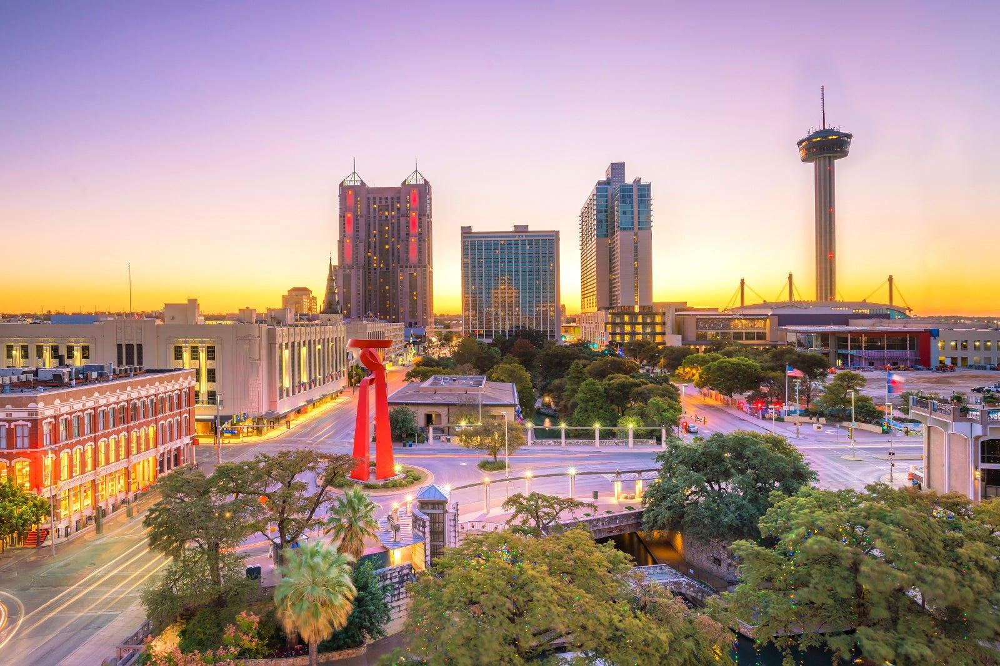

San Antonio, Texas
San Antonio (/ˌsæn ænˈtoʊnioʊ/ SAN an-TOH-nee-oh; Spanish for "Saint Anthony") is a city in the U.S. state of Texas. It is the seventh-most populous city in the United States, the second-most populous city in Texas (after Houston), and the second-most populous city in the Southern U.S., with a population of 1.43 million at the 2020 census. The Greater San Antonio metropolitan area, with an estimated 2.76 million residents, ranks as the third-largest metropolitan area in Texas and the 24th-largest in the nation. It is the county seat of Bexar County.

The area was named "San Antonio" in 1691 by a Spanish expedition in honor of Saint Anthony of Padua. A Spanish mission and colonial outpost was founded there in 1718, and San Antonio became the first chartered civil settlement in present-day Texas in 1731. It was part of the Spanish Empire, then the Mexican Republic from 1821 to 1836, before joining the United States after the annexation of the Republic of Texas in 1846. Straddling the regional divide between South and Central Texas, San Antonio anchors the southwestern corner of an urban megaregion colloquially known as the Texas Triangle. It lies about 80 miles (130 km) from Austin along the I-35 corridor, and together, the San Antonio–Austin metroplex is home to approximately 5 million people.

San Antonio is home to five 18th-century Spanish frontier missions, including The Alamo and those preserved in San Antonio Missions National Historical Park, which were collectively designated as UNESCO World Heritage sites in 2015. Major attractions include the River Walk, Tower of the Americas, SeaWorld San Antonio, Six Flags Fiesta Texas, and the Alamo Bowl. The city also hosts the San Antonio Stock Show & Rodeo and is home to the five-time NBA champion San Antonio Spurs. San Antonio welcomes approximately 32 million visitors annually and is a key military hub, hosting several major U.S. Armed Forces facilities, including Fort Sam Houston and nearby bases such as Lackland and Randolph Air Force Bases. The city is also home to four Fortune 500 companies, the South Texas Medical Center, and the largest majority-Hispanic population in the U.S., with 64% of residents identifying as Hispanic.